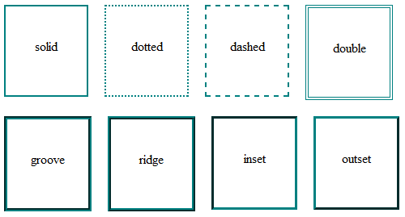
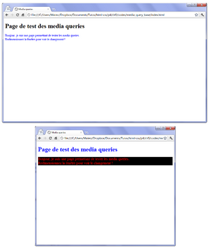
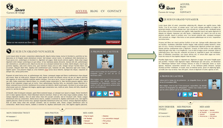

Envie d'apprendre le langage CSS, pas de soucis :D :
Avant tout il faut savoir que le CSS signifie "Cascading Style Sheets : feuilles de style en cascade", ce qui signifie que si on donne plusieurs règles CSS pour une balise HTML, c'est la dernière règle qui s'applique.
Le format
Appelé par un sélecteur/attribut (class, id, span, div) ou une balise (p, em, h1, ..), on a ensuite une accolade ouvrante, une propriété et une valeur et un ; par ligne, et une accolade fermante, exemple :
p { propriete1: valeur1; propriete2: valeur2; }
class est un attribut que l'on rajoute dans le HTML fonctionne sur toutes les balises de type inline, on la place dans un paragraphe entourant du texte, tout comme "strong" ou "em", on la place dans le HTML en début de balise, par exemple : h1 class="nomdelaclasse", puis en CSS on l'appelle avec un ".", donc ici : .introduction
id est un attribut de balise HTML comme "class" sauf qu'on ne peut la mettre qu'une fois, vu que c'est un id, donc ça donne de même : h1 id="nomdelid", par contre on l'appelle avec un #, ce qui en CSS donne #nomdelid, en général, on met des id que sur des éléments qui sont uniques dans la page, comme par exemple le logo
L'inconvénient c'est qu'on ne peut pas sélectionner un mot ou un texte en particulier dans un paragraphe ou un titre par exemple, pour cela on a deux autres balises :
span est une balise HTML de type inline, on la place à l'intérieur d'un paragraphe, autour du texte souhaité, tout comme "strong" ou "em", en HTML on entour donc le texte souhaité par cette balise en lui donnant une classe, ce qui donne : span class="nomdelaclasse", puis en CS on l'appelle avec un "." vu que c'est une classe, donc : .nomdelaclasse
div est une balise HTML de type block, on la place en dehors d'un paragraphe/texte, tout comme "p" ou "h1", leur point commun est qu'elles créent un nouveau bloc dans la page et provoquent un retour à la ligne.
D'autres façons de sélectionner un élément
En CSS on pourra sélectionner tous les éléments grâce de la page via * :
* { color: red; }
Pour sélectionner des éléments qui suivent d'autres éléments, on utilise le +, exemple pour sélectionner tous les paragraphes qui suivent les titres h1 on utilisera h1 + p :
Enfin, pour sélectionner des éléments dans d'autres éléments, par exemple toutes les balises em qui se trouvent dans une balise h1, on utilisera l'espace : h1 em
Les tailles
- Taille fixée en absolue à 16px avec font-size: 16px; - elle peut être fixée en pixels, en centimètres ou millimètres, exemple avec 24px ou 1cm ou 9mm.
- Taille en relative avec font-size: small; - Toutes les valeurs possibles sont : xx-small,x-small,medium,moyen,large,x-large et xx-large, exemple avec x-large.
- Taille en relative avec font-size: 0.8em; - le nombre décimale s'écrit avec un ".", exemple avec 0.8em.
- Taille en relative avec font-size: 110ex; - cette valeur est un pourcentage, exemple avec 2ex
Les polices
Pour indiquer une police on utilise font-family, exemple avec :
p { font-family: Impact, "Arial Black", Arial, Verdana, sans-serif; }
Avec l'exemple ci-dessus, on va définir pour les paragraphes la police en "Impact", et si elle n'est pas présente, le navigateur va choisir la police "Arial Black", sinon "Arial", etc.. "Arial Black" est entre guillemet car elle contient un espace.
On a aussi la possibilité de faire appel à une police installée dans le dossier du site avec @font-face depuis CSS3.
Il faudra cependant que le navigateur des visiteurs télécharge automatiquement le fichier de la police qui peut dépasser 1mo, donc attention à choisir une police libre de droit et assez légère.
Le site fontsquirrel.com permet de télécharger des packs prêts à l'emploi.
Il existe plusieurs formats de fichiers de polices, et ceux-ci ne fonctionnent pas sur tous les navigateurs, voici un résumé :
- .ttf : TrueType Font - Fonctionne sur IE9 et tous les autres navigateurs
- .eot : Embedded OpenType - Fonctionne sur Internet Explorer uniquement, toutes versions,e format est propriétaire, produit par Microsoft
- .otf : OpenType Font - Ne fonctionne pas sur Internet Explorer
- .svg : SVG Font - Le seul format reconnu sur les iPhone et iPad pour le moment
- .woff : Web Open Font Format - Nouveau format conçu pour le Web, qui fonctionne sur IE9 et tous les autres navigateurs
En CSS, pour définir une nouvelle police, il faut la déclarer comme ceci :
@font-face { font-family: 'ma_police'; src: url('ma_police.eot'); }
Le fichier de police (ici "ma_police.eot") doit ici être situé dans le même dossier que le fichier CSS (ou dans un sous-dossier, si on utilise un chemin relatif).
L'idéal est de proposer plusieurs formats pour la police vu que le navigateur ne lira pas forcément ce dernier dernier s'il ne lui est pas compatible (par exemple pour eot qui ne sera lu que pour IE).
Le navigateur téléchargera donc le format de police qu'il sait lire; Voici comment indiquer plusieurs formats, et aussi comment appliquer la police sur le titre par exemple :
@font-face
{
font-family: 'ma_police';
src: url('ma_police.eot') format('eot'),
url('ma_police.woff') format('woff'),
url('ma_police.ttf') format('truetype'),
url('ma_police.svg') format('svg');
}
h1 /* Utilisation de la police qu'on vient de définir sur les titres *
{
font-family: 'ma_police', Arial, serif;
}
D'ailleurs il y a moyen de bien s'amuser, tu verras que lorsque tu cliques sur les citations de code sur cette page j'ai appliqué une font perso, ainsi qu'un nouveau style :D :
.citation_code_balise:active
{
border: 7px skyblue inset;
border-radius: 20px / 30px;
box-shadow: -18px -30px 75px lightgreen;
font-family: 'ma_police_perso_en_gras';
background-color: mistyrose;
font-size: 1.5em;
color: orangered;
}
Italique et gras
- font-style: italic; permet de mettre le texte en italique.
- font-style: oblique; c'est pour l'oblique, et on peut utiliser "normal" pour remettre en normal.
- Pour la mise en gras on utilise font-weight: bold;, l'autre valeur est "normal".
Décoration
text-decoration est utilisée ici, dont voici les exemples de valeurs :
- text-decoration: blink; - Clignotant selon le navigateur utilisé
- text-decoration: underline; - Souligné
- text-decoration: line-through; -
- text-decoration: overline; - Avec une ligne au-dessus
- text-decoration: none; - Avec, euh, un mode normal :D
L'alignement
On utilise la propriété "text-align" pour l'alignement, voici les différents valeurs :
- text-align: left; - Texte à gauche (réglage d'ailleurs par défaut)
- text-align: center; - Texte au centre
- text-align: right; - Texte à droite
- text-align: justify; - Et texte justifié, ce dernier permet de faire en sorte qu'il prenne toute la largeur possible, sans laisser d'espace blanc à la fin des les lignes
exemple :)
exemple :)
exemple :)
exemple :)
À noter qu'on ne peut modifier l'alignement du texte d'une balise inline (comme span, a, em, strong, ..). l'alignement ne fonctionne que sur des balises de type block (p, div, h1, h2, ..) et c'est un peu logique, quand on y pense : on ne peut pas modifier l'alignement de quelques mots au milieu d'un paragraphe ! C'est donc en général le paragraphe entier qu'il vous faudra aligner.
Les flottants
Pour faire flotter une image on utilise la propriété float, avec float: left ou float: right, en fait flotter revient à mettre une image à un endroit et mettre du texte à droite ou à gauche
Si d'un seul coup on veut que le texte ne soit plus à droite (ou à gauche) de l'image, il faut arrêter le flottant (ou mettre plein de br mais ce serait pas propre) Pour arrêter un flottant, on utilise donc la propriété clear: both
Les couleurs
On peut appeler les couleurs de plusieurs façon différente (pour du texte, la couleur du fond, etc..), dont voici les propriétés :
- color: bleu - Avec la couleur directement
- color: #FF5A28 - Avec la notation hexadécimale
Ces lettres ou chiffres fonctionnent deux par deux. Les deux premiers indiquent une quantité de rouge, les deux suivants une quantité de vert et les deux derniers une quantité de bleu.
Notez qu'il existe une notation raccourcie : on peut écrire une couleur avec seulement trois caractères. Par exemple : #FA3 équivaut à écrire #FFAA33.
- color: rgb(240,96,204) - Avec la méthode RGB, quantité de rouge, de vert et de bleu
La couleur du fond
Ici on utilise la propriété background-color, par exemple :
p { background-color: black; /* Le fond de la page sera noir */ color: white; /* Le texte de la page sera blanc */ }
Image de fond
Pour appliquer une image de fond c'est la propriété background-image, exemple :
p { background-image: url("arc_en_ciel"); /* Le fond du paragraphe aura l'image nommée arc_en_ciel.png */ }
L'adresse indiquant où se trouve l'image de fond peut être écrite en absolu (http://…) ou en relatif (fond.png).
Différentes propriétés permettent de changer le comportement de l'image de fond : background-attachment : Fixer le fond, composé de :
- background-attachment: fixed; - L'image de fond reste fixe
- background-attachment: scroll - L'image de fond défile avec le texte
background-repeat : Répéter le fond, composé de :
(En effet par défaut, l'image de fond est répétée en mosaïque, il est possible de la changer).
- background-repeat: no-repeat; - Le fond ne sera pas répété. L'image sera donc unique sur la page
- background-repeat: repeat-x; - Le fond sera répété uniquement sur la première ligne, horizontalement
- background-repeat: repeat-y; - Le fond sera répété uniquement sur la première colonne, verticalement
- background-repeat: repeat; - Le fond ne sera répété en mosaïque (par défaut)
background-position : Définir la position du fond, composé de cinq valeurs :
- background-position: top; - En haut
- background-position: bottom; - En bas
- background-position: left; - À gauche
- background-position: center; - Au centre
- background-position: right; - À droite
Il est possible de combiner ces mots. Par exemple, pour aligner une image en haut à droite avec background-position: top right;
body { background-image: url("soleil.png"); background-attachment: fixed; /* Le fond restera fixe */ background-repeat: no-repeat; /* Le fond ne sera pas répété */ background-position: top right; /* Le fond sera placé en haut à droite */> }
Les super-propriétés
La super-propriété backgroung permet, comme d'autres "super-propriétés" de combiner plusieurs propriétés, ainsi on peut combiner background-image, background-repeat, background-attachment et background-position, exemple :
body { background: url("arc_en_ciel.png") fixed no-repeat top right; }
L'ordre des valeurs n'a pas d'importance, on peut combiner les valeurs dans n'importe quel ordre; On est pas obligé de mettre toutes les valeurs, ainsi si on ne veut pas mettre fixed alors on ne la met pas.
On peut donc mettre plusieurs images comme ceci :
body { background: url("soleil.png") fixed no-repeat top right, url("neige.png") fixed; }
La transparence
Pour jouer avec les niveaux de transparence des éléments, on a deux propriétés :
- opacity qui permet de gérer la transparence de tout le contenu d'un élément (comme un paragraphe), donc images et autres contenu dedans, exemple :
- rgba, la notation RGBa permet de gérer la transparence pour la couleur de fond dans l'exemple suivant :
p { opacity: 1; /* Le paragraphe sera totalement opaque (par défaut) */ opacity: 0; /* Le paragraphe sera totalement transparent */ opacity: 0.8; /* Le paragraphe sera un peu transparent */ }
p { background-color: rgba(255, 0, 0, 0.5); /* Fond rouge à moitié transparent */ }
Il s'agit en fait de la notation RGB que nous (comme vue précédemment), mais avec un quatrième paramètre : le niveau de transparence (appelé « canal alpha »).
Attention, ce n'est pas compatible avec les anciens navigateurs, c'est pourquoi il est recommandé de déclarer quand même un fond gérer la transparence pour ces derniers, donc dans le code on aura deux lignes pour gérer toutes les éventualités :
p { background-color: rgb(255,0,0); /* Pour les navigateurs anciens */ background-color: rgba(255,0,0,0.5); /* Pour les navigateurs plus récents */ }
Les bordures
De nombreuses propriétés permettent de modifier l'apparence des bordures : border-width, border-color, border-style, ..
Mais du coup on peut aussi utiliser la super-propriété border pour laquelle on indique :
- La largeur de la bordure, valeur à mettre en pixel
- Sa couleur, que l'on peut renseigner avec un nom de couleur, avec une valeur hexadécimale ou une valeur RGB
- Le type de bordure grâce aux propriétés suivantes :
- border: none; - pas de bordure (par défaut)
- border: solid; - un trait simple
- border: dotted; - en pointillés
- border: dashed; - avec des tirets
- border: double; - avec une bordure double
- border: groove; - en relief
- border: ridge; - avec un autre effet de relief
- border: inset; - avec un effet 3D global enfoncé
- border: outset; - avec un effet 3D global surélevé

Par ailleurs on peut aussi mettre un effet que sur un ou plusieurs côtés de la bordure
- border: top; - pas de bordure (par défaut)
- border: bottom; - un trait simple
- border: left; - en pointillés
- border: right; - avec des tirets
Ainsi avec la propriété border-top-width on gère l'épaisseur de la bordure du haut; Et avec la super-propriété border en précisant le côté, on gère l'épaisseur et les autres options, du côté précisé, exemple :
p { border-left: 2px solid black; /* Le paragraphe aura une bordure gauche noire de trait simple et de 2px d'épaisseur */ border-right: 1px dotted white; /* Le paragraphe aura une bordure droite blanche en pointillé et de 1px d'épaisseur */ }
Enfin (depuis CSS3), on peut gérer l'arrondie des bordures, comme on peut le voir dans les citations de code de cette page; Il s'agit pour cela de la propriété border-radius en indiquant l'importance de l'arrondi en pixel, par exemple :
p { border-radius: 10px; }
Il est également possible de préciser l'arrondi de l'angle (respectivement dans l'ordre : en haut à gauche, en haut à droite, en bas à droite, en bas à gauche), comme ceci :
p { border-radius: 10px 5px 10px 5px; }
Enfin, il est possible d'affiner l'arrondi des angles en créant des courbes elliptiques, pour cela il suffit d'indiquer deux valeurs séparées par un slash, comme suit :
p { border-radius: 20px / 10px; }
Les ombres
On peut appliquer les ombres sur deux éléments, les boîtes ou le texte.
Ainsi box-shadow et text-shadow seront utilisées pour cela.
On y gère quatre éléments :
- Le décalage horizontal de l'ombre
- Le décalage vertical de l'ombre
- L'adoucissement du dégradé
- La couleur de l'ombre
Donc pour une ombre orange de 14 pixels(comme l'ombre suivante, on va avoir :
p { box-shadow: 14px 14px 14px lightcoral; }
Et donc, pour une ombre bleue nuit décalée de 8px à l'horizontal, de 15px à la verticale, et légèrement adoucie, mais pour le texte on aura :
p { text-shadow: 8px 15px 3px midnightblue; }
Ça donne ça :D
Apparence des éléments de façon dynamique avec les pseudo-formats
Des éléments peuvent changer une fois la page chargée, pour cela on utilise des pseudo-formats, on les appelle en CSS en les rajoutants après le nom d'une balise ou d'une classe comme ceci par exemple
p:hover { }
On peut agir de façon dynamique :
- Au survol
- Lors du clic
- Lors du focus (élément sélectionné)
- Lorsqu'un lien a été consulté
Quand la souris est sur l'élément (paragraphe, titre, etc..), grâce au pseudo-format hover qui signifie survoler
h1:hover
{
color: green; /* Pour avoir les titres en vert quand on les survole */
}
a /* Liens par défaut (non survolés) */
{
text-decoration: none;
color: red;
font-style: italic;
}
a:hover /* Apparence au survol des liens */
{
text-decoration: underline;
color: green;
}
Généralement utilisé que sur les liens, le style appliqué apparaît lorsque le bouton de la souris est enfoncé; On utilisera ici le pseudo-format active
a:active { background-color: yellow; font-size: 10ex; color: red; }
Ce qui donne, avec le lien suivant (que j'ai mis bien, bien, en valeur pour qu'on voit la différence :D :
a
Cliques ici et tu verras :D Tu peux même resté appuyer sur le bouton de la souris pour mieux voir ;)
{kind=link}
Avec le pseudo-format focus on va pouvoir appliquer un style lorsque ce dernier est sélectionné (par exemple quand on clique sur un lien, il y a une petite bordure en pointillés autour, c'est cela qui est concerné), pratique surtout dans les formulaires quand on clique sur un endroit pour y saisir du texte.
Sous Chrome et Safari notamment, l'effet ne sera visible qu'en appuyant sur la touche "Tab".
Il est possible d'appliquer un style (pas grand chose à part la couleur) à un lien vers une page qui a déjà été vue (violet par défaut); On utilisera pour cela le pseudo-format visited, exemple :
a:visited { color: green; }
Responsive design : Les Media Queries
Cette partie est indispensable, elle permet de gérer l’affichage en fonction des différentes résolutions d’écrans.
En effet, d’un écran large à un smartphone, en passant par un écran de PC portable, une tablette, etc.. , il y a de nombreuses résolutions différentes.
Les media queries (nouveautés de CSS3) sont des règles à appliquer pour changer le design du site en fonction des caractéristiques de l’écran, grâce à cela on crée un design qui s’adapte automatiquement à l’écran de chaque visiteur.
Il ne s'agit pas de nouvelles propriétés, mais de règles que l'on peut appliquer dans certaines conditions.
Concrètement, on peut dire par exemple "Si la résolution de l'écran du visiteur est inférieure à tant, alors appliquer les propriétés CSS suivantes".
Cela permet de changer l'apparence du site dans certaines conditions : Augmenter la taille du texte, changer la couleur de fond, positionner différemment le menu, etc.., dans certaines résolutions (par exemple).
Les media queries ne concernent pas que les résolutions d'écran, on peut changer l'apparence du site en fonction d'autres critères comme le type d'écran (smartphone, télévision, projecteur…), le nombre de couleurs, l'orientation de l'écran (portrait ou paysage), etc.. Les possibilités sont nombreuses.
Appliquer une media query
Les media query sont donc des règles qui indiquent quand on doit appliquer des propriétés CSS, il y a deux facçons de les utiliser :
- En chargeant une feuille de style CSS différente en fonction de la règle (exemple : Si la résolution est inférieure à 1280px de large, charger le fchier "petite_resolution.css").
- En écrivant la règle directement dans le fichier .css habituel (exemple : Si la résolution est inférieure à 1280px de large, charger les propriétés CSS ci-dessous)
Chargement d'une feuille de style différente
Pour rappel, au debut du fichier HTML on a une ligne <link rel="stylesheet" href="style.css" />
On dit peut lui ajouter un attribut media, dans lequel on va écrire la règle qui doit s'appliquer pour que le fichier soit chargé, dans ce cas on dit qu'on fait une "requête de media" (media query en anglais), voici un exemple :
<link rel="stylesheet" media="screen and (max-width: 1280px)" href="petite_resolution.css" />
Au final, le code HTML pourrait proposer plusieurs fichiers CSS, un par défaut (qui est chargé dans tous les cas) et un ou deux autres qui seront chargés en supplément, uniquement si la règle correspondante s'applique :
<!DOCTYPE html> <html> <head> <meta charset="utf-8" /> <link rel="stylesheet" href="style.css" /> <!-- Pour tout le monde --> <link rel="stylesheet" media="screen and (max-width: 1280px)" href="petite_resolution.css" /> <!-- Pour ceux qui ont une résolution inférieure à 1280px --> <title>Mon site internet</title> </head>
Chargement des règles directement dans la feuille de style
Une autre technique, peut-être plus pratique, consiste à écrire ces règles dans le même fichier CSS que d'habitude.
Dans ce cas, on écrit la règle dans le fichier .css comme ceci :
@media screen and (max-width: 1280px) { /* Rédiger les propriétés CSS ici */ }
Les règles disponibles
Il existe de nombreuses règles permettant de construire des media queries, voici les principales :
- color : Gestion de la couleur (en bits/pixel)
- height : Hauteur de la zone d'affichage (fenêtre)
- width : Largeur de la zone d'affichage (fenêtre)
- device-height : Hauteur du périphérique
- device-width : Largeur du périphérique
- orientation : Orientation du périphérique (portrait ou paysage)
- media : Type d'écran de sortie, dont voici quelques-une des valeurs possibles :
- screen : Écran "classique"
- handheld : Périphérique mobile
- print : Impression
- tv : Télévision
- projetction : Projecteur
- all : Tous les types d'écrans
On peut rajouter le préfixe min- ou max- devant la plupart de ces règles.
Ainsi, min-width signifie "largeur minimale", max-height "hauteur maximale", etc.
La différence entre width et device-width se perçoit surtout sur les navigateurs mobiles des smartphones.
Les règles peuvent être combinées à l'aide des mots suivants :
- only : Uniquement
- and : Et
- not : Non
Voici quelques exemples de media queries pour bien comprendre le principe :
/* Sur les écrans, quand la largeur de la fenêtre fait au maximum 1280px */ @media screen and (max-width: 1280px) /* Sur tous types d'écran, quand la largeur de la fenêtre est comprise entre 1024px et 1280px */ @media all and (min-width: 1024px) and (max-width: 1280px) /* Sur les téléviseurs */ @media tv /* Sur tous types d'écrans orientés verticalement */ @media all and (orientation: portrait)
Test des media queries
Les media queries sont surtout utilisées pour adapter le design du site aux différentes largeurs d'écran.
Voici un test simple : Changer la couleur et la taille du texte si la fenêtre fait plus ou moins de 1024 pixels de large; Pour le test, je vais utiliser la seconde méthode qui consiste à écrire la règle directement dans le même fichier .css que d'habitude :
/* Paragraphes en bleu par défaut */ p { color: blue; } /* Nouvelles règles si la fenêtre fait au plus 1024px de large */ @media screen and (max-width: 1024px) { p { color: red; background-color: black; font-size: 1.2em; } }
Dans la feuille CSS, j'ai d'abord demandé à ce que le texte des paragraphes soit écrit en bleu, puis j'ai ajouté une media query qui s'applique à tous les écrans dont la largeur ne dépasse pas 1024 px.
À l'intérieur, j'ai appliqué des règles CSS sur les paragraphes pour les écrire plus gros et en rouge, cela donne une apparence différente selon la taille de la fenêtre (ce que l'on peut voir en la redimensionnant) :

Maintenant, allons plus loin en changeant l'apparence du site vu en TP dans le cours sur le langage HTML :
Ce site est bien adapté à la plupart des résolutions d'écran mais, quand l'écran est plus petit que 1024 px, il devient nécessaire de "scroller" vers la droite pour voir toute la page, ce qui n'est pas très pratique en le consultant sur un petit écran.
Et si on utilisait ces media queries pour changer l'apparence du site sur les résolutions inférieures à 1024 px de largeur ?
Pour ce faire, voici les modifications à effectuer :
- Le menu de navigation en haut à droite sera disposé en hauteur plutôt qu'en largeur, et les liens seront écrits en plus petit
- La bannière avec le pont de San Francisco sera supprimée car elle prend beaucoup de place et n'apporte pas beaucoup d'informations
- Le bloc <aside> "À propos de l'auteur" sera placé sous l'article (et non pas à côté), et son contenu sera réorganisé (la photo de Zozor sera positionnée en flottant).
On pourrait bien entendu faire beaucoup d'autres modifications (changer la couleur, la disposition du pied de page, etc..) mais cela sera déjà bien suffisant pour s'entraîner avec les media queries.
Nous allons travailler directement à l'intérieur du fichier style.css bien qu'on pourrait choisir la solution de faire pointer le fichier HTML vers un fichier CSS spécifique pour cette résolution
- La page
Pour le moment, la largeur de la page est fixée à 900 px et le contenu est centré :
#bloc_page { width: 900px; margin: auto; }
À la suite de ces lignes, on va donc ajouter la règle media query suivante :@media all and (max-width: 1024px) { #bloc_page { width: auto; } }
La règle signifie : « Pour tous les types d'écrans, si la largeur de la fenêtre ne dépasse pas 1024px, alors exécuter les règles CSS suivantes ».
Ici les règles CSS en question sont simples, il n'y en a en fait qu'une seule : on donne une largeur automatique à la page (plutôt qu'une largeur fixe de 900 px).
La page prendra alors tout l'espace disponible dans la fenêtre, cela évite l'apparition de barres de défilement horizontales sur les petites résolutions.
auto est la valeur par défaut de la propriété width.
Par défaut, les blocs ont une largeur automatique (ils prennent toute la place disponible), cette valeur "écrase" celle qui a été forcée à 900px quelques lignes plus haut : On revient donc au comportement par défaut du bloc. - Le menu de navigation
On souhaite que le menu de navigation prenne moins de place sur les petites résolutions, aussi plutôt que de lui donner une dimension fixe, on va lui redonner sa dimension automatique flexible d'origine.
Chaque élément du menu s'écrira en dessous du précédent : Pour cela, on demande à ce que les éléments de la Flexbox soient organisés en colonne.
Enfin, le texte sera écrit plus petit et on retire la bordure en bas des liens lors du survol, car elle est moins adaptée à cette disposition.@media all and (max-width: 1024px) { nav { width: auto; text-align: left; } nav ul { flex-direction: column; } nav li { padding-left: 4px; } nav a { font-size: 1.1em; } nav a:hover { border-bottom: 0; } }
- La bannière
Pour retirer la bannière, rien de plus simple : On va utiliser la propriété display, à laquelle on va affecter la valeur none.
Si la fenêtre est trop petite, on préfère masquer complètement la bannière :@media all and (max-width: 1024px) { #banniere_image { display: none; } }
- Le bloc “À propos de l’auteur”
>Plutôt que de placer ce bloc à droite de l'article, on va le faire passer en dessous grâce à des Flexbox en colonne, ce type de disposition "de haut en bas" est plus adapté aux petits écrans.
À l'intérieur du bloc, on réajuste un peu la position des éléments : la photo, notamment, sera placée en flottant à droite.@media all and (max-width: 1024px) { section { flex-direction: column; } article, aside { width: auto; margin-bottom: 15px; } #fleche_bulle { display: none; } #photo_zozor img { width: 110px; float: right; margin-left: 15px; } aside p:last-child { text-align: center; } }
Que signifie aside p:last-child ?
C'est un sélecteur avancé. aside p signifie "tous les paragraphes à l'intérieur de la balise <aside>".
Avec :last-child, on cible uniquement le dernier paragraphe dans le bloc aside (celui qui contient les liens vers Facebook et Twitter), pour pouvoir centrer les images.
On aurait aussi pu affecter une class ou un id à ce paragraphe pour le cibler directement, mais ainsi on a pas eu à modifier le code HTML.
La page est désormais complètement réorganisée lorsque la fenêtre fait 1024px ou moins de largeur. Regardons à présent le résultat :

Media queries et navigateurs mobiles
Les écrans des smartphones étant beaucoup moins larges que les écrans de PC (seulement quelques centaines de pixels de large), pour s'adapter, les navigateurs mobiles affichent le site en "dézoomant", ce qui permet d'avoir un aperçu de l'ensemble de la page.
La zone d'affichage simulée est appelée le viewport, cela correspond à la largeur de la fenêtre du navigateur sur le mobile.
En CSS, avec les media queries, si on cible l'écran avec max-width sur un mobile, celui-ci va comparer la largeur que l'on indique avec celle de son viewport, le problème, c'est que le viewport change selon le navigateur mobile utilisé :
| Navigateur | Largeur du viewport par défaut |
| Opera Mobile | 850 pixels |
| iPhone Safari | 980 pixels |
| Android | 800 pixels |
| Windows Phone | 1024 pixels |
Un iPhone se comporte comme si la fenêtre faisait 980px de large, tandis qu'un Android se comporte comme si la fenêtre faisait 800px !
Pour cibler les smartphones, plutôt que d'utiliser max-width, il peut être intéressant de recourir à max-device-width : c'est la largeur du périphérique.
Les périphériques mobiles ne dépassant pas 480px de large, on pourra viser uniquement les navigateurs mobiles avec cette media query :
@media all and (max-device-width: 480px) { /* Mettre les règles CSS pour les mobiles ici */ }
>Pourquoi ne pas cibler les mobiles avec la règle media handheld ?
En effet, on peut (en théorie) cibler les écrans mobiles avec le media handheld, malheureusement aucun navigateur mobile à part Opera Mobile ne reconnaît handheld, ils se comportent tous comme s'ils étaient des écrans normaux (screen), on ne peut donc pas vraiment utiliser handheld pour viser les mobiles.
On peut modifier la largeur viewport du navigateur mobile avec une balise meta à insérer dans l'en-tête (head) du document :
<meta name="viewport" content="width=320" />
On peut également utiliser cette balise pour modifier la façon dont le contenu de la page s'organise sur les mobiles, pour obtenir un rendu facile à lire, sans zoom, on peut demander à ce que le viewport soit le même que la largeur de l'écran :
<meta name="viewport" content="width=device-width" />
Outils web
colorschemedesigner est un site qui permet de trouver des couleurs de façon harmonieuse pour la création graphique (web entre autre).
Il y a plusieurs boutons intéressants, notamment "Color List" qui permet d'obtenir la liste des couleurs harmonieuses allant avec celle sélectionnée, ou encore "Light page example" et "Dark page example" permettant de tester l'affichage des couleurs sur un site.
{kind=link}
{kind=link}
{kind=link}